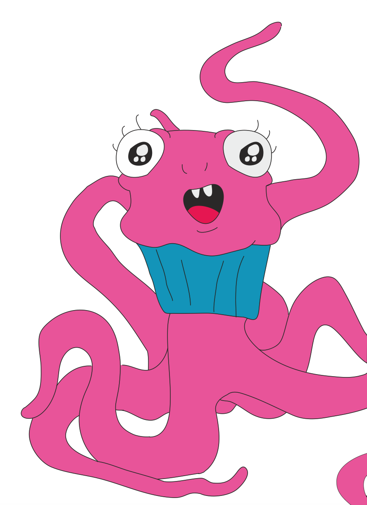

I drew this in 2012 and since then it has only been a sketch on a piece of paper. So when introduced to Mobile App and Design in SVCTE and had access to Adobe Illustrater, I couldnt pass up the opporitunity to make Geoffry more realistic in the cartoon sense.